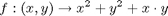
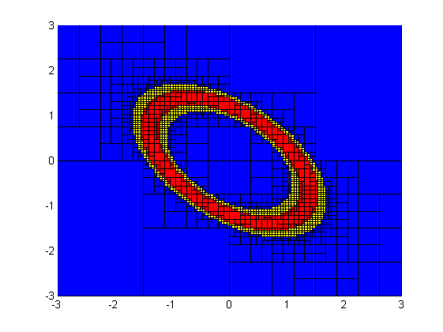
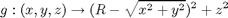
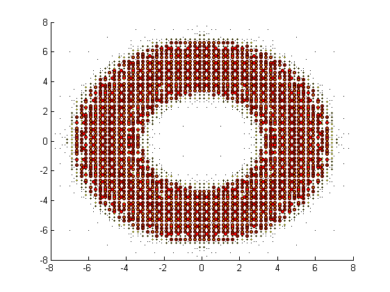
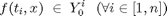
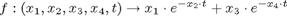
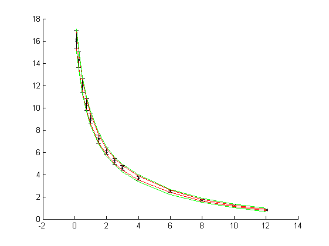

Using VSIVIA
Contents
vsivia is part of a toolbox that comprises several components: vsivia itself, a vectorial interval library, a contractor library, as well as some other tool functions, in particular draw_boxes, that is meant to plot sets of boxes on a figure. The pieces of code hereafter, based on the examples provided with vsivia, show how to implement these features.
clear all ; close all ;
Solving a 2-D inversion problem
doughnut_parameters defines the following problem: inverting the function f on [1,2], f being:

draw_boxes is used in order to plot the results of vsivia. The three first parameters specify the three vectors of boxes to be plotted, which are displayed respectively in red, yellow and blue. The last parameters indicate the dimensions associated to the X, Y and Z-axes. Their number depends upon the number of dimensions of the considered problem.
On the figure below, red boxes are sets whose image through f lies between 1 and 2: the set of these boxes is an inner enclosure of the solution set of the problem. On the opposite, blue boxes have been proven to contain no solution at all. Between those red and blue sets, yellow boxes are boxes whose images through f are not included in [1,2], but that have an non empty intersection with in [1,2]. Thus, the set of red and yellow boxes is an outer enclosure of the solution set.
[S,E,N] = vsivia(doughnut_parameters) ; draw_boxes(S,E,N,1,2) ;
Elapsed time is 0.182366 seconds. Number of iterations: 15 Number of boxes processed: 3791
Solving a 3-D inversion problem
torus_parameters defines a similar problem: inverting g on [1,4], where:

In this example, R is set to 5. As in the previous application, the results are plotted using draw_boxes. When called with 6 parameters, the figure is in 3 dimensions and, for a good readability, only the centers of the boxes contained in S and E are drawn using red and yellow spheres.
[S,E,N] = vsivia(torus_parameters) ; draw_boxes(S,E,N,1,2,3) ;
Elapsed time is 0.222621 seconds. Number of iterations: 19 Number of boxes processed: 47855
Solving a 4-D data-fitting problem
In this third example, a data-fitting problem is solved as an inversion problem. As defined in drugs_parameters, an n-element time vector t as well as an n-element measurement vector Y0 are considered, the purpose being to find the boxes x such as:

f being:

On the figure below, measurements have been drawn in black, using error bars in order plot measurement uncertainties, i.e. the lower and upper possible values for Y0. From the parameters defined by drugs_parameters, vsivia determines an inner and an outer enclosures of the solution set, that corresponds to the situation in which f matches every measurement.
drugs = drugs_parameters() ; [S,E] = vsivia(drugs) ; t = drugs.t ; Y0 = drugs.Y0 ; figure ; hold on ; errorbar(t, .5*(Y0.lower+Y0.upper), .5*(Y0.upper-Y0.lower), 'kx') YS = join(drugs.compute(S), 1) ; plot(t, YS.lower, 'r') ; plot(t, YS.upper, 'r') ; YE = join(drugs.compute([S ; E]), 1) ; plot(t, YE.lower, 'g') ; plot(t, YE.upper, 'g') ;
Elapsed time is 8.131166 seconds. Number of iterations: 40 Number of boxes processed: 309031
Solving an IVGTT problem
In this fourth and last example, an intravenous glucose tolerance test (IVGTT) is considered. Thorough explanations about it are given in IVGTT_parameters but, to put it simply, it is the same kind of problem than the previous application, that is a 4-D data-fitting problem, except that it is slightly trickier, because:
- No explicit expression of the function to be inverted is known; integrating this function is required in order to determine its value in a given point
- The theoretical model is not accurate enough to fit all the measurements, especially at the beginning of the test
As a consequence, in IVGTT_parameters, a numerical integration is performed in the compute function, that involves therefore much more computations than in the previous applications. In addition, modal interval analysis (MIA) has been used in order to reduce overbounding phenomena in interval computations. At last, the (optional) parameter tol_out in vsivia_parameters, that stands for the number of measurements that may not be matched, has been set to 6.
As in the previous application about a bolus intravenous injection of a drug into a subject, a graphical representation of the model has been drawn using the enclosures of the parameters computed by vsivia.
% ivgtt = IVGTT_parameters ; % % [S,E] = vsivia(ivgtt) ; % % figure ; % % hold on ; % % t = ivgtt.t ; % % Y0 = ivgtt.Y0 ; % % errorbar(t, .5*(Y0.lower+Y0.upper), .5*(Y0.upper-Y0.lower), 'kx') ; % % YS = join(ivgtt.compute(S), 1) ; % % plot(t, YS.lower, 'r') ; % plot(t, YS.upper, 'r') ; % % YE = join(ivgtt.compute([S ; E]), 1) ; % % plot(t, YE.lower, 'g') ; % plot(t, YE.upper, 'g') ; %